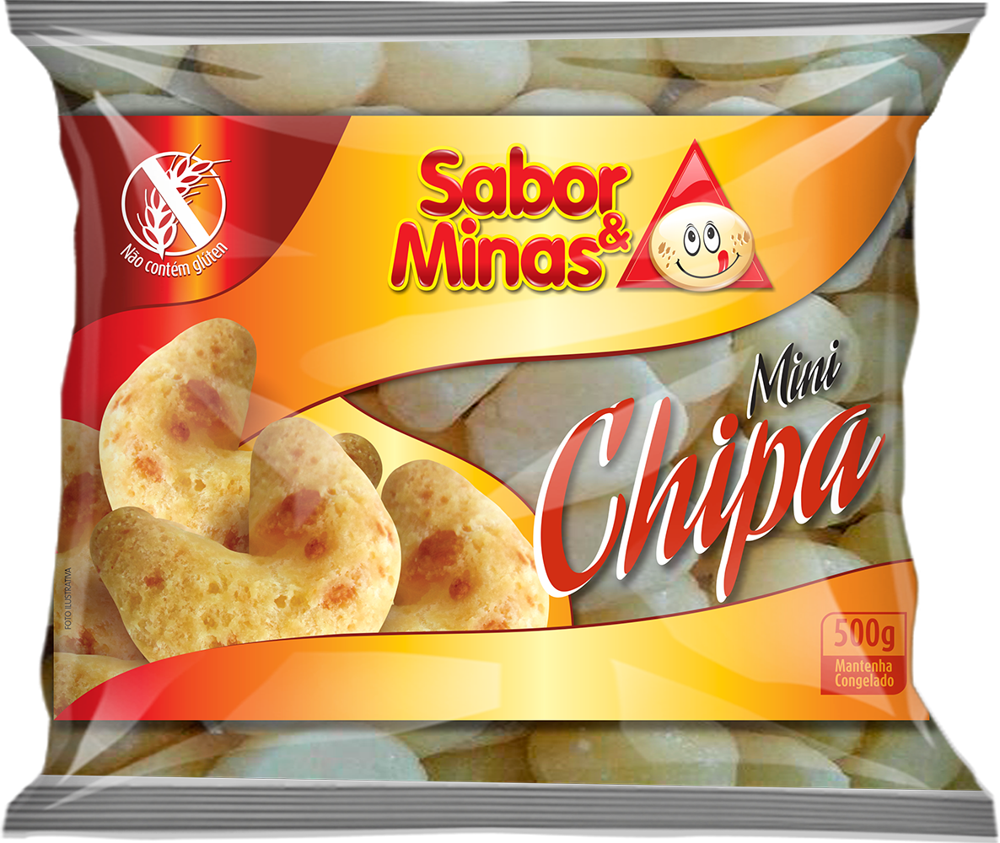

Mini Chipa
Todo o sabor em pequenas porções.
A Mini Chipa Sabor & Minas combina a receita da marca com um formato pequeno, prático e perfeito para compartilhar.
ONDE ENCONTRAR →Descrição
A Mini Chipa Sabor & Minas combina a receita da marca com um formato pequeno, prático e perfeito para compartilhar.
Ingredientes
Fécula de Mandioca, ovos pasteurizados, amido modificado, queijo minas padrão, margarina, óleo de soja, polvilho azedo, gordura vegetal hidrogenada, fécula de batata, soro de leite, sal, aroma idêntico ao natural de queijo e manteiga.
Não contém glúten.
Alérgicos: contém ovos, derivados de leite e soja.
Contém lactose.
Modo de preparo
- A Mini Chipa Sabor & Minas vai direto para o forno sem descongelar.
- Preaquecer o forno por 10 minutos.
- Distribuir as Mini Chipas com um espaçamento de 2 cm entre elas na assadeira.
- Assar à temperatura média de 180ºC por cerca de 30 minutos.
- Retirar do forno as Mini Chipas Sabor & Minas quando estiverem douradas.
Dicas importantes
Não use forno de micro-ondas.
Não asse em forno frio.
Existem diferenças entre os fornos; por isso, ajuste o modo de preparo ao seu forno.
Conservação
• Freezer (-12ºC ou mais frio): 180 dias.
• Congelador doméstico (-4ºC a -6ºC): 60 dias.
• Transporte (-6ºC a -12ºC).
• Uma vez descongelado, o produto não deve ser novamente congelado.
Apresentações disponíveis

Dados técnicos
Tabela nutricional
| Nutriente | Porção | %VD* |
|---|---|---|
| Valor energético | Conforme rotulagem | — |
| Carboidratos | Conforme rotulagem | — |
| Proteínas | Conforme rotulagem | — |
| Gorduras totais | Conforme rotulagem | — |
| Gorduras saturadas | Conforme rotulagem | — |
| Fibra alimentar | Conforme rotulagem | — |
| Sódio | Conforme rotulagem | — |
Os valores numéricos serão inseridos a partir da rotulagem/ficha técnica correspondente, sem estimativas.